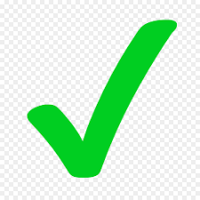

Sketch Memo
자료에 필기하고 쉽게 저장해보세요
메모장
머릿속 기억장치의 용량이 꽉 찼을때

여러 가지 자료들과 함께 수업시간이나 회의 할 때 메모해야 할 것을 메모해서 이미지 파일로 간직하세요.
글꼴, 폰트 크기, 글머리 기능 같은 복잡한 생각들을 효율적으로 정리할 도구가 있습니다.
이미지를 불러옴으로써 이해하기 쉬운 메모를 작성해보세요. 옆에 그림판에서 간단한 표시를 하고 그 이미지를 불러오면 더 좋아요.
메모장으로
그림판
더욱더 효과적인 자료를 위해
여러 가지 자료들에 당신의 생각을 더해보세요.
여러 가지 색으로 포인트를 잘 보이게 해보세요.
브러쉬 색은 물론, 브러쉬 굵기 크기도 조정하고, 간단한 도형도 그릴 수 있습니다.
회의 중, 메모장에 필기를 해놓고 그림판으로 불러와서 포인트를 체크해보세요.
canvas로